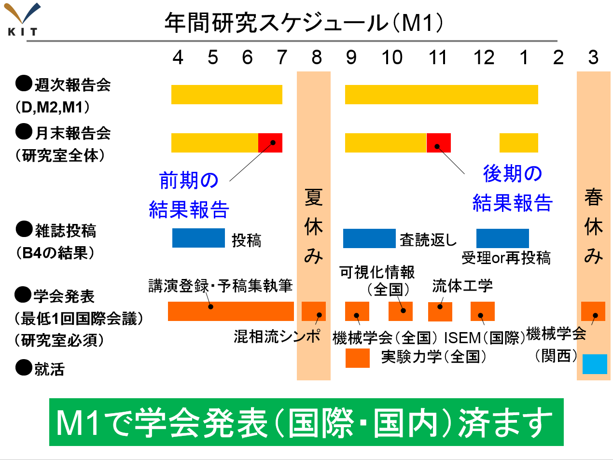
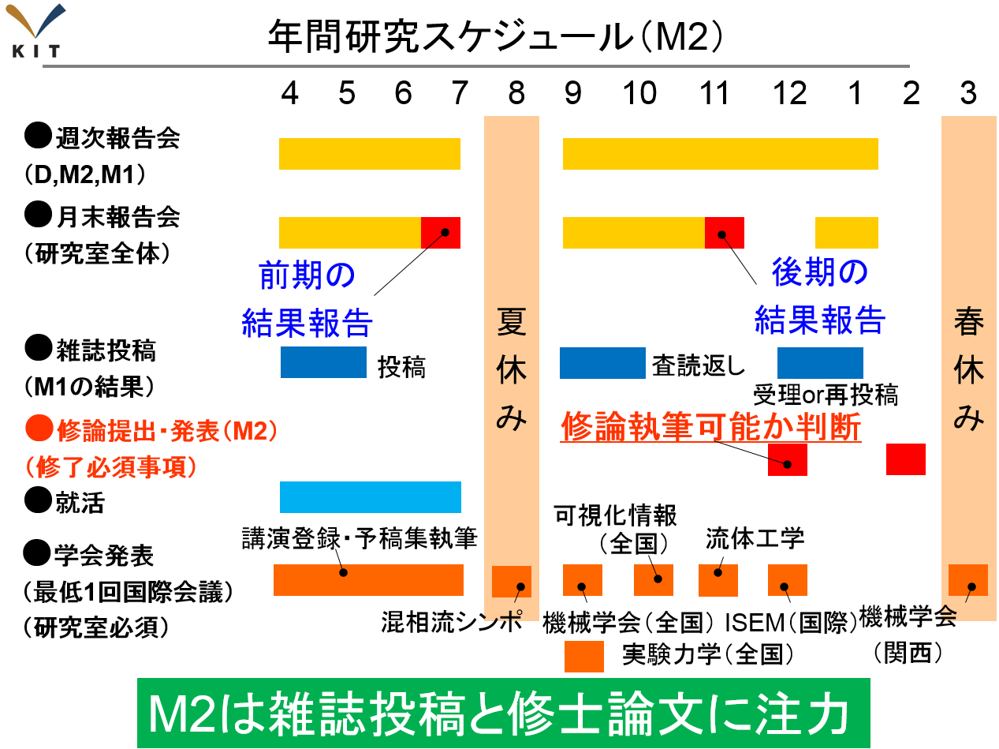
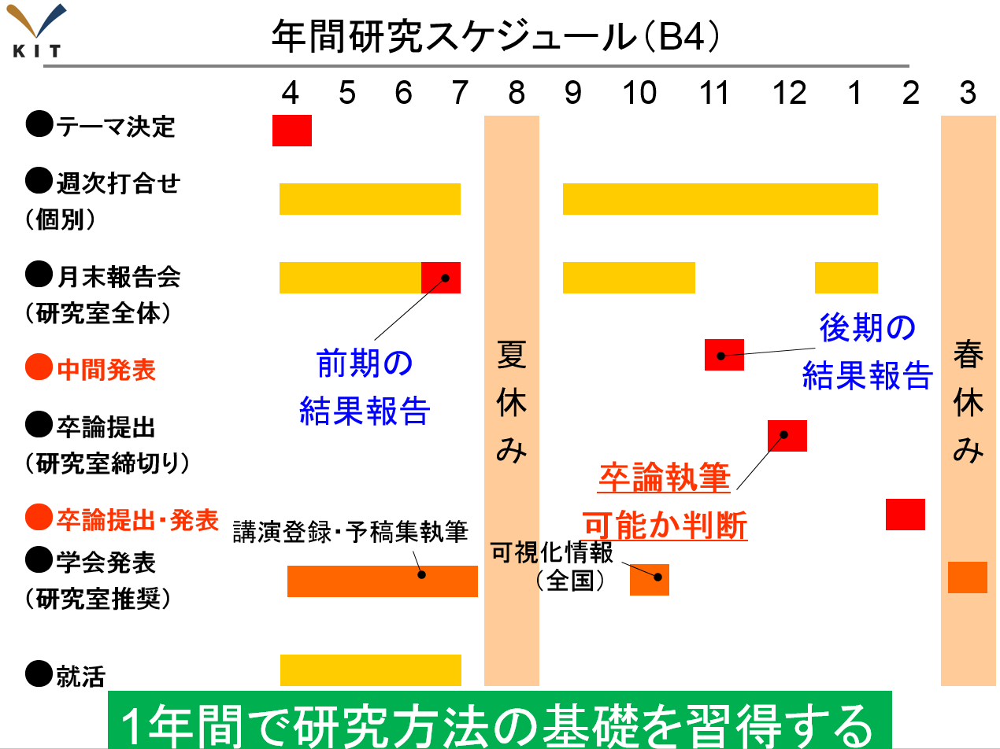
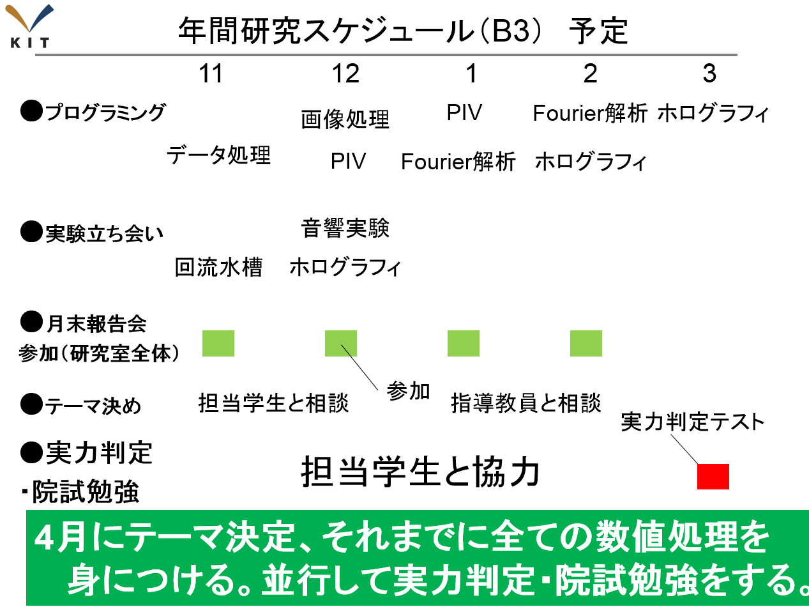

english
トップ
ページ
研究
テーマ
研究
報告
研究
スタッフ
研究
設備
研究室の
所在地
教育・研究
理念
産学連携
のご案内
学生の
募集
講義に関
する情報
研究関連
リンク
用語解説
計測システム工学研究室の研究紹介
計測システム工学研究室の研究の大きな3つの柱は，
光計測
，
流体計測
，
音響計測
です．研究室では，研究テーマ間で相互に連携しながら研究を進めています．議論に必要な幅広いテーマ理解のために，3回生配属から4回生4月のテーマ決定までは，3つの計測法の基本を理解するための
演習
をおこなっています．
まず，
光計測
では，
ディジタルホログラフィ
による3次元応用計測法の実証およびその数値解析
をおこなっています．ディジタルホログラフィによる3次元計測法が種々の現象に応用されてからまだ日が浅く，今後どこまで発展するか楽しみな分野です．基礎的なテーマとしては
光の回折現象を利用した新しい3次元計測法の数理モデルの作成
，
3次元計測法を用いた流体・材料・振動・生体の応用計測
があります．
次ぎに，
流体計測
では，
画像粒子流速測定法
を用いた流れの可視化
をおこなっています．特に，3次元速度場計測の開発は，流体力学の進展に伴う高精度な実験データの必要性だけでなく，さまざまな工学分野からの強い要求により，非常に重要になっています．研究テーマとして，
UAVの飛行特性に関する研究
や，
渦と粒子の相互作用の研究
をおこなっています．
そして，
音響計測
では，
多チャンネルのマイクロフォンセンサを用いた計測法および応用研究
をおこなっています．さまざまな音響場を測定するために，センサから出力される電圧を増幅する回路は研究室内で製作しています．研究テーマとして，
マイクロフォンアレイを用いた近接場音響ホログラフィに関する研究
や，
タイヤ内部空洞共鳴音に関するの研究
をおこなっています．
最後に，計測システム工学研究室では，以上の3テーマを実施するための高速度カメラ，3次元デジタイザ，各種光源，光学機器，回遊水槽，が
整備
されています．
光計測
，
流体計測
，
音響計測
を扱う単独の研究室としてはまれに見る
充実した研究環境
を有しています．3つのテーマは将来を考えると際限のないくらいの広がりがあります．しかもほとんどが手付かずの状態で若い人達の参加を待っています．
計測システム工学研究室の教育内容紹介
計測システム工学研究室の教育の概要は，学部3回生後期で「
研究の準備
（プログラミング，院試勉強）」を実施し，学部4回生で「
研究の基礎
（はなす，かく，よむ）」を習得し，修士の2年間で「
主体的な研究活動
（計画，実行，要約）」を行っています．博士の3年間は，学生自身が，学部，修士で習得した内容を応用して「
自立した研究者
」になります．
教育する概要は上記の通りですが，学生自身が積極的に取り組まなければ単に時間が経つだけです．特に本研究室の教員が学生に研究を無理強いすることはありません．たとえば，英語が苦手なので国際会議で発表しないと意思表示があれば話はそれまでです．ただし，機会だけは与え続けます．また意欲的に取り組んで研究進捗が早い場合は，学部4回生からでも国際会議発表や論文投稿をおこないます．本研究室は，
機会を利用して前向きに取り組む学生だけが成長できる環境
です．
大学院博士課程
大学院修士課程
学部卒業研究生
3年次研究室配属
大学院博士課程
計測システム工学研究室で博士号をとろう
他大学，社会人から本研究室に進学を希望する場合は，出願資格の判定，研究課題の検討のため，入試（8月末の予定）の数カ月以前に受け入れ予定教員と打ち合せをしておくことが必要です．計測システム工学研究室に入学を希望する人はもちろん
村田教授
に連絡を取って下さい．
学外，社会人不問．
実験，数値計算どちらかの経験があることが好ましい．
学会発表の経験があることが好ましい．
機械工学の知識があること．
その他は本校の
募集要項
に従う
研究活動：
報告会出席（毎週金曜日16時30分）
月末報告会（10分発表，10分質疑，1ヶ月1回）
学会発表（在学中に国際会議1回以上，国内会議2回以上）
論文掲載（在学中に2誌以上）
コアタイム：-
学部で「
研究の基礎
」，修士で「
主体的な研究活動
」を身につけた上で，「
研究者として自立
」できるように教員が学生を教育します.
ページの先頭へ
大学院修士課程
学外，社会人不問．
実験，数値計算どちらかの経験があることが好ましい．
機械工学の知識があること．
その他は本校の
募集要項
に従う
高専，他大学，社会人から本研究室に進学を希望する場合は，博士課程と同様に
村田教授
まで連絡願います．
研究活動：
報告会出席（毎週金曜日16時30分）
月末報告会（10分発表，10分質疑，1ヶ月1回）
学会発表（在学中に最低1回）
コアタイム：11：00〜17：00 （学費のためのアルバイトの場合は相談可）
学部で教育した「
研究の基礎
」を身につけた上で，「
主体的な研究活動
」，
�〃弉�
：学生が期間内に研究結果が得られる計画を立案できる，
�⊆孫�
：学生が教員・業者・実習センタと協力して計画を実行できる，
�Ｍ很�
：学生が教員と議論して研究結果を論文に要約できる，の3点を下図の2年間スケジュールで，教員が学生を教育します．具体的には，学会発表や論文投稿の締切設定を行うことで，上記3点を実践的に習得します．特に高等専門学校や他大学から大学院より本研究室進学の場合は，入学前に学部3回生で実施するプログラミング演習を実施します．大抵の場合は本研究室で必要な基礎がないため，修士2年間で学位授与を満たす成果をあげる事は並大抵の努力ではなしえません．少しでも事前演習で基礎を固めることが必要です．かならず進学決定後速やかに連絡願います．


ページの先頭へ
学部卒業研究生
3年次研究室配属時に計測システム工学研究室へ配属されていること．
卒業研究着手に必要な単位が揃っていることが好ましい．
機械工学の知識があること．
その他は本校の
募集要項
に従う
研究活動：
週次打合せ（個別に指導教官と1週間に1回）
月末報告会（10分発表，10分質疑，1ヶ月1回）
学会発表（学生員卒業研究発表講演会の発表を推奨）
コアタイム：11：00〜17：00 （学費のためのアルバイトの場合は相談可）
「研究の基礎」は，
�，呂覆�
：研究内容を第三者に伝わるプレゼンができる，
�△�く
：研究内容を第三者に伝わる論文が書ける，
��よむ
：第三者の研究内容を論文からよめる，の3点を下図の年間スケジュールで，教員が学生を教育します．教員と学生個別に毎週決まった時間に週次打ち合わせを行い，研究内容の議論を行います．研究室全体で行う月末報告会では，1ヶ月で実施した研究活動をレジュメとプレゼンで報告します．また，他者の先行研究を論文データベースや図書館を利用して，文献調査を行います．1年で3点の基礎を習得します．

ページの先頭へ
3年次研究室配属
3年次後期登録単位を含めて卒業研究着手が4年次から可能となっていること．
研究活動：
プログラミング演習のレポート提出（毎週），実験の立ち会い（適宜見学）
月末報告会参加（1ヶ月1回）
コアタイム：11：00〜17：00 （学費のためのアルバイトの場合は相談可）
本研究室で実施しているテーマの理解促進のため，基本3テーマ（
光計測
，
流体計測
，
音響計測
）のデータ処理プログラム作成と実験立ち会いをおこないます．プログラム作成は，初歩的なデータ処理から開始して，最終的にホログラフィの記録・再生プログラムまでを段階ごとに実施します．それぞれ
プログラミング演習
として課題を出題されて，毎週レポートの提出があります．プログラミングの事前知識は不要で，コンパイラのインストールから懇切丁寧に教員や所属学生が3年生を指導するので安心です（
演習
の様子）．実験立ち会いは卒業研究や修士論文作成で実施する実験に参加できます．並行して大学院進学に向けた試験勉強を実施します．研究テーマは，充分にテーマ理解が進み，卒業論文着手可能になった4回生の4月に決定します．

ページの先頭へ
© Measurement System Laboratory, Kyoto Institute of Technology.